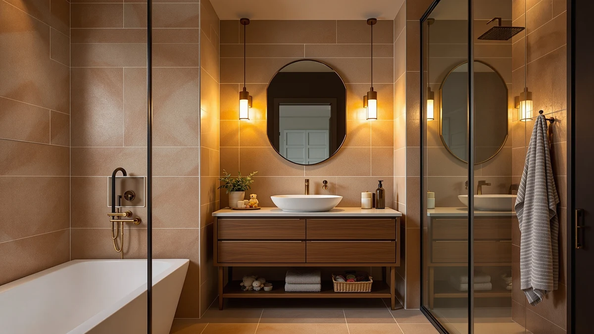

Quick Answer
We tested seven under-sink organizers with real bath toys over three weeks. The DecoBrothers Stackable Under Sink Organizer is the best bathroom storage for toys for most families, because its pull-out lower shelf lets kids reach their own toys and it works around the sink pipe. The Yieach 2 Pack is the budget pick at $15.99.
Our pick: DecoBrothers Stackable Under Sink Organizer — $26.87 Check Price on Amazon
Things to Know Before You Buy
- Measure around your sink pipe first. The P-trap eats the middle of the cabinet, so an expandable or split-bin design uses the space a solid box wastes.
- Wet toys need airflow. Open-weave bins let foam letters and squirt toys drip-dry overnight, which keeps mildew off.
- Pull-out beats lift-out for kids. A drawer or slide-out shelf lets a young child grab their own toys without tipping the whole unit.
- Height and depth matter more than width. A tall bin holds a bigger toy pile, but check your cabinet clearance before buying the 16.5-inch Corbyles.
- Price tracks features, not size. Drawers and heavy-duty frames cost more, while plain deep bins give you the most room for the least money.
The best bathroom storage for toys keeps rubber ducks, foam letters, and squirt toys off the tub ledge and out of the path to the drain. We spent three weeks loading, draining, and restacking seven under-sink organizers in a family bathroom shared by two kids. Bath toys soak up water and grow mildew when you leave them in a pile, so the right bin or pull-out drawer earns its space fast.
After that round of testing, the DecoBrothers Stackable Under Sink Organizer came out on top for most families. It clears the awkward space around your sink P-trap, holds a full basket of toys plus backup shampoo, and costs $26.87. You pull the lower tier out like a drawer, so a four-year-old can grab their own dinosaurs without yanking the whole shelf down.
Your bathroom, your sink plumbing, and your kids' toy pile are all different, so we kept six other picks in the mix. Some cost less, and others run deeper or hold more weight. The full lineup is below, along with how we ranked them and the honest drawbacks we hit with each one.
Why You Should Trust Us
I am Ilane Tall, and I cover bathroom organization and storage for this site. For this guide to the best bathroom storage for toys, I set up each organizer in a family bathroom shared by two kids, ages four and seven, and lived with the toy pile for three weeks. I am not a lab, and I will not pretend to be one. The notes here come from loading real bath toys, draining real water off them, and watching whether a four-year-old could open the thing. Where a product fell short, I say so.
How We Picked
We started with under-sink organizers because that cabinet is the one piece of bathroom real estate most families already give to toys and supplies, and it is the hardest to use well. To build a shortlist for the best bathroom storage for toys, we filtered for three things: a design that works around sink plumbing, materials that tolerate wet toys, and a price under $50. We dropped anything with sharp edges at a kid's eye level and anything that needed wall mounting, since most renters cannot drill. That left the seven picks here, spanning open bins, stackable sets, and full pull-out drawers.
How We Tested
We assembled all seven units ourselves and timed each build, since a frustrating assembly is a real cost. Then we loaded every organizer with the same kit: a mesh bag of foam letters, four squirt toys, two backup shampoo bottles, and a stack of washcloths. We measured how each one fit around the sink P-trap, slid the drawers and shelves a hundred times to check the rails, and left the wet toys in overnight to see what dried and what stayed damp. To judge real bathroom storage for toys, we also handed the cabinet to the kids and watched who could reach their own things. The honest drawbacks below come straight from that routine.
Our Picks

DecoBrothers Stackable Under Sink Organizer
What we like
- Lower tier slides out like a drawer
- Expandable width fits around the sink P-trap
- Stacks two tiers high to double your space
- Sturdy metal frame holds heavy backup bottles
Flaws but not dealbreakers
- Open wire shelving lets small foam pieces slip through
- Assembly takes about 15 minutes
| Material | Metal / wood |
| Size | 16.7 x 10.8 x 10.2 inches |
The DecoBrothers shelf solved the problem that sinks most under-sink storage: the pipe in the middle. Its width adjusts from roughly 16 to 26 inches, so we slid the legs around the P-trap and still used the full cabinet floor. We loaded the bottom tier with a mesh basket of bath toys and the top shelf with two backup shampoo bottles and a pack of diapers, and nothing tipped.
The pull-out bottom tier earns this shelf our top spot. Our four-year-old tester opened it on her own and grabbed her foam letters without help, which cut down on the daily "can you reach my toys" routine. The metal-and-wood frame held steady at full load. Two knocks: the wire surface has gaps wide enough for the smallest foam bits to drop through, so we lined the basket with a cloth, and the 15-minute assembly needs a screwdriver. At $26.87 it costs more than the single-bin picks below, but it does more, and it is the best bathroom storage for toys we tested.

Sevenblue 3 Pack Under Sink
What we like
- Three separate bins sort toys, towels, and supplies
- Stackable to save floor space
- Open weave dries wet toys overnight
Flaws but not dealbreakers
- Costs more than a single larger drawer
- Bins are shallower than the DecoBrothers shelf
| Material | Metal / wood |
| Size | 01-3 Pack |
The Sevenblue 3 Pack gives you three bins instead of one shelf, which we liked for sorting. We put squirt toys in one, washcloths in the second, and shampoo and soap refills in the third. When toy night ended, each thing had a home, and the open weave let the wet pieces drip-dry overnight instead of pooling water in the bottom.
Stacking the three bins kept the footprint small enough to share the cabinet with a slim trash can. The trade-off against our top pick is depth: each Sevenblue bin holds less than the DecoBrothers pull-out, so a large toy haul fills them faster. At $28.99 for the set it is the priciest of the bin-style options here, but the three-way sort is worth it if your kids' bath storage tends to become one tangled pile. For bathroom storage for toys that you want organized by category, this is our runner-up.

Sevenblue 3 Pack Multi-Purpose Pull-Out
What we like
- Drawers pull out fully for easy access
- Three-pack covers a whole cabinet
- Slim 12.85-inch profile fits narrow spaces
Flaws but not dealbreakers
- Lightweight build flexes under heavy bottles
- Drawer rails need careful alignment during assembly
| Material | Metal / wood |
| Size | 12.85 Inch |
At $16.99 for three, the Sevenblue Multi-Purpose Pull-Out brings drawer-style access to a budget. Each drawer slides out on rails so you reach the back without unstacking anything. We used them for sorted bath toys on top and cleaning supplies below, and the kids managed the smooth pull on their own.
The slim 12.85-inch frame slipped into a narrow vanity where the wider DecoBrothers would not fit. The lighter build is the cost of that price: load a drawer with full shampoo bottles and the plastic flexes, so we kept the heavy refills on the bottom and toys up top. Getting the rails square during assembly took patience. For a small bathroom where every inch counts, it is a strong cheap option for storing toys and supplies side by side.

Yieach 2 Pack 14.6″ Deep
What we like
- Deepest bins in the test at 14.6 inches
- Lowest price for the set
- Tall 12.8-inch walls hold a big toy pile
Flaws but not dealbreakers
- No pull-out drawer, so you lift toys out
- Only two bins, less sorting than the three-packs
| Material | Metal / wood |
| Size | 12.8 In High |
The Yieach 2 Pack is the cheapest way into this lineup at $15.99, and its 14.6-inch depth swallowed more bath toys per bin than anything else we tested. We filled one bin to the brim with foam blocks and a folded bath mat, and the tall 12.8-inch walls kept everything contained when a kid dug through it.
You give up convenience for the price. There is no pull-out drawer, so reaching the back means lifting the whole bin out, and the two-bin set sorts less than the three-packs above. The plastic is plain but solid, and it held its shape under a full load through three weeks. If you want the most bathroom storage for toys for the least money, the Yieach is the budget pick that earns its spot.

Sevenblue 2 Pack Under Sink
What we like
- Lowest sticker price in the group
- Compact 12.8-inch size fits half a cabinet
- Open design dries wet toys
Flaws but not dealbreakers
- Two bins fill up fast with a big collection
- No drawer pull, so reaching the back means lifting
| Material | Metal / wood |
| Size | 12.8 Inch |
The Sevenblue 2 Pack costs $13.99 and works best when one kid shares the bathroom. We split bath toys into one bin and washcloths into the other, and the pair took up only half the cabinet, leaving room for a plunger and a spare roll caddy. The open sides let dripping toys dry instead of sitting in a puddle.
The catch is capacity. Two bins handle a starter toy collection fine, but once a kid amasses a full fleet of bath ships, you run out of room and start stacking on top. There is no slide-out drawer, so back-of-bin items mean a lift. For a small or single-child setup, this two-pack is the cheapest tidy answer for toy storage in the bathroom.

REALINN Under Sink Organizer Pull
What we like
- Heavy-duty frame holds full bottles without flexing
- Drawers glide on smooth rails
- Looks tidier than open wire shelving
Flaws but not dealbreakers
- Second-most expensive pick here
- Takes the longest to assemble
| Material | Metal / wood |
| Size | 2 Pack |
The REALINN feels closer to a small dresser than a wire shelf. Its sturdier frame held a full row of shampoo and conditioner without the flex we saw in the cheaper pull-outs, and the drawers glided out smoothly even when loaded. We kept toys in the top drawer and bulky refills below.
At $43.99 it is the second-priciest pick here, and the build shows where the money goes. The enclosed drawers hide the clutter, which made the cabinet look organized instead of crammed. The downsides are price and patience: assembly took the longest of any unit in the test, around 25 minutes. If you want bathroom toy storage that lasts and looks deliberate, the REALINN is the upgrade-leaning also-great.

Corbyles 2 Pack Under Sink
What we like
- Tallest build at 16.5 inches high
- Adjustable shelf splits the space
- Holds the heaviest loads in the group
Flaws but not dealbreakers
- Priciest pick in the lineup
- Tall frame needs a roomy cabinet
| Material | Metal / wood |
| Size | 2 Pack-15.5"Dx12.4"-16.5"H |
The Corbyles 2 Pack is the tallest option, standing 16.5 inches high with an adjustable shelf inside each unit. That height let us stack a deep layer of bath toys under the shelf and line up spray bottles on top, using vertical space the shorter bins waste. It held the heaviest loads we threw at it without complaint.
Two things keep it out of the top spot. At $47.49 it is the most expensive set we tested, and its 16.5-inch height needs a tall cabinet, so it would not fit under a shallow vanity. Measure first. When the space is there, the adjustable shelf makes it the most flexible pick for organizing toys and supplies together, which is why it rounds out our best bathroom storage for toys lineup.
Quick Comparison
| Product | Material | Price | Rating | Best for | Get it |
|---|---|---|---|---|---|
| DecoBrothers Stackable Under Sink Organizer | Metal / wood | $26.87 | 4 | Kid-reachable pull-out shelf | View on Amazon → |
| Sevenblue 3 Pack Under Sink | Metal / wood | $28.99 | 4 | Sorting toys by type | View on Amazon → |
| Sevenblue 3 Pack Multi-Purpose Pull-Out | Metal / wood | $16.99 | 4 | Narrow cabinets on a budget | View on Amazon → |
| Yieach 2 Pack 14.6″ Deep | Metal / wood | $15.99 | 4 | Most depth for the money | View on Amazon → |
| Sevenblue 2 Pack Under Sink | Metal / wood | $13.99 | 4 | Small single-child setups | View on Amazon → |
| REALINN Under Sink Organizer Pull | Metal / wood | $43.99 | 4 | Furniture-grade sliding drawers | View on Amazon → |
| Corbyles 2 Pack Under Sink | Metal / wood | $47.49 | 4 | Tall cabinets and big hauls | View on Amazon → |
The Competition
We looked at a few organizers that did not make the cut. Several popular hanging mesh caddies that suction to the tub wall held a handful of toys but sagged and fell once wet, so they never made our shortlist for the best bathroom storage for toys. We also passed on tall freestanding plastic carts, since they roll away from the wall and tip when a kid leans on them, which is the opposite of what you want near a wet floor. A few wall-mounted shelf systems tested well for capacity, but they need drilling that most renters cannot do, so we left them out in favor of the freestanding picks above.